配信の流れ＋稼ぐコツ
配信前
その１
ログインする
(ラインのノートにID・PWがあります)
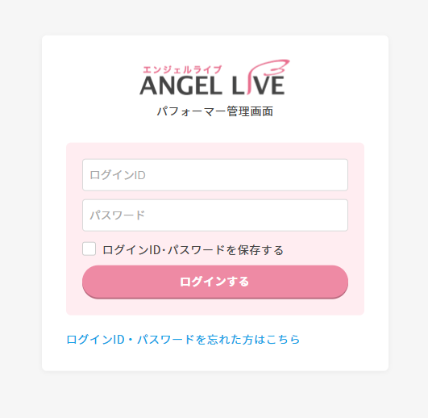
その２
今日のキャンペーン内容をチェック
(キャンペーン開始30分前～終了30分前ぐらいが稼ぎ時です)
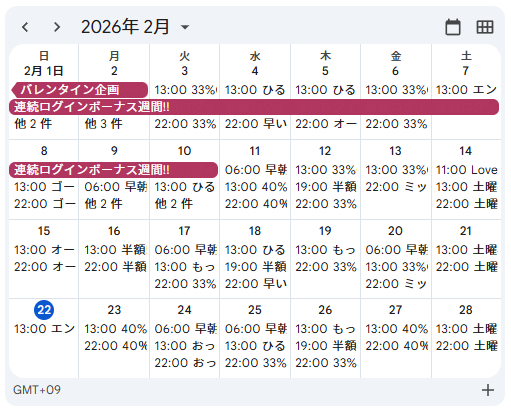
その３
その日のキャンペーン内容を見て参加できるものがあれば参加にしましょう
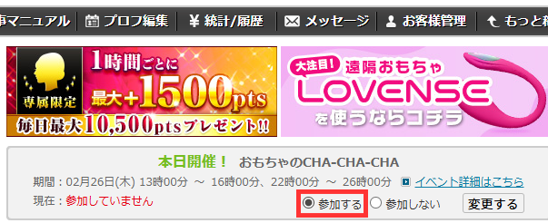
その４
次回出演予定を設定しておきましょう
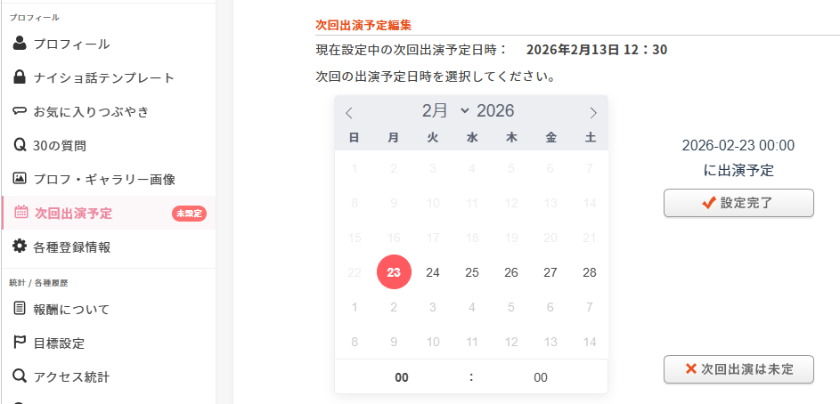
その５
可能であれば、配信を始める前にメッセージの一斉送信しましょう
(太客の方には個別メッセージが効果的です)
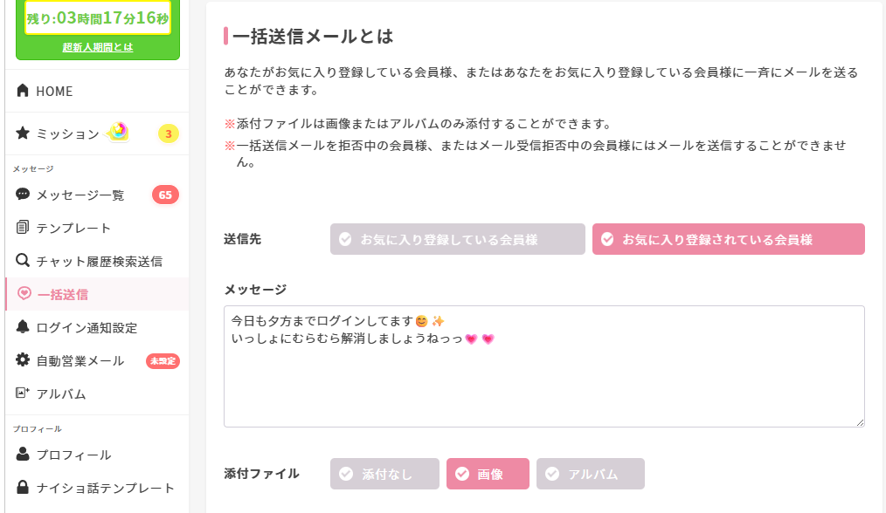
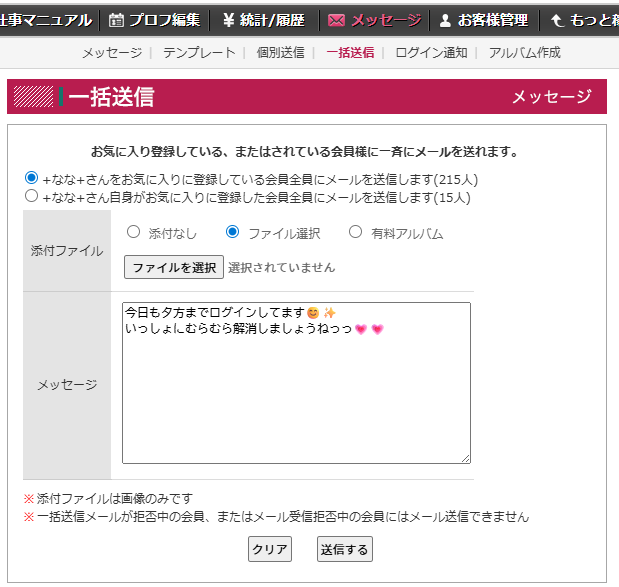
配信中
その１
- 背筋を伸ばす
- 自然な笑顔を意識する
- 柔らかい表情を心がけましょう
その２
- 首を少しかしげる
- 少し揺れる
- モジモジする
- 手を振る
- おいでおいでする
- たまにカメラ目線を意識する
その３
- 髪の毛を耳にかける
- 前髪を整える
- 服や襟元を整える
配信中の工夫
- 服装を変えてみる
- コスプレをしてみる(たまにイベントとして)
- パジャマに着替えてみる(深夜の時間帯＋自宅)
- 画角を変えてみる
- ラブンスの種類 or 台数を変えてみる
配信中のテク
- メインが２人 → ２人目に挨拶しましょう
- ノゾキが入った → 手を振る(状況次第)
- ノゾキから話しかけられた → 身振り手振りで答えましょう♪
- ノゾキから話しかけられた → コピペで返信しましょう♪
配信後
その１
気に入りに追加してくださった方に定型文で返信しておきましょう♪
(こちらからもお気に入りを登録しても良いです♪)
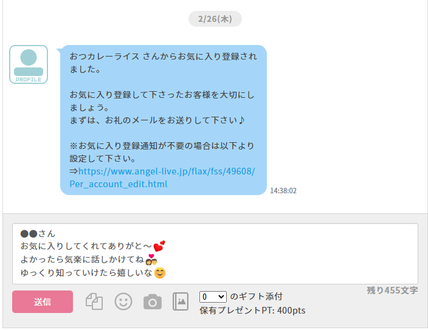
その２
チャットの履歴で日付を設定し、お話した方の一覧をチェックします。
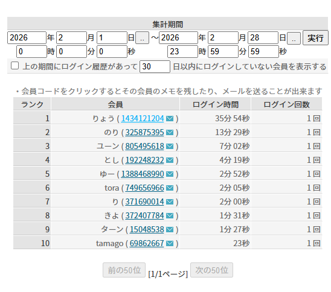
その３
長めにお話した方には配信後すぐにお礼メッセージを送信しましょう
(併せてお気に入り登録もしましょう)
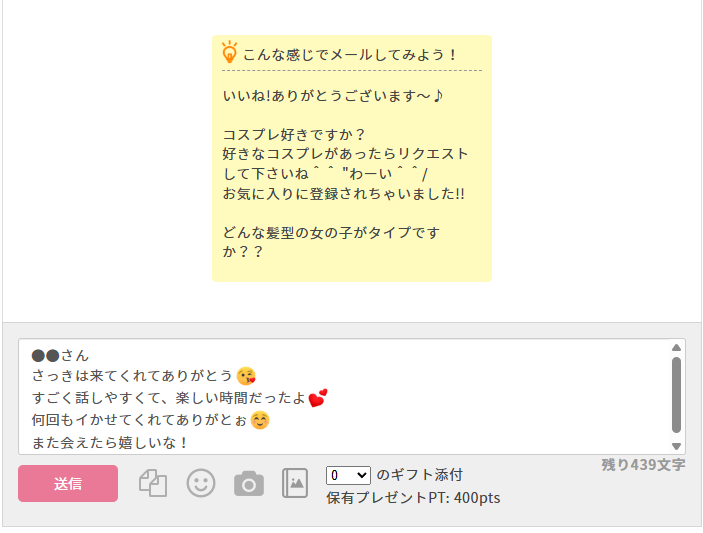
その４
お話したのが短めの方には定型文でも大丈夫です♪
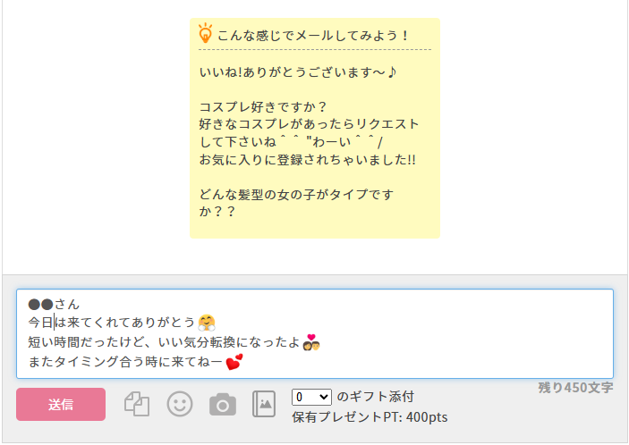
その５
太客の方には３日以内に定期的にメッセージを返信しておくと効果的です♪
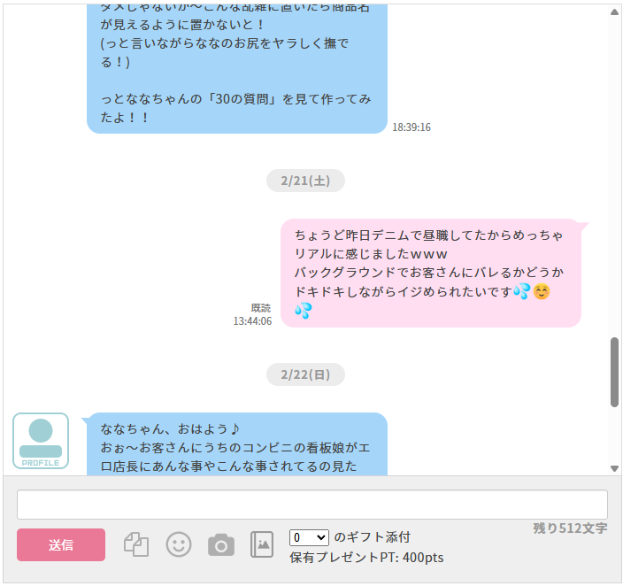
その６
次回の配信予定が決まっていれば、プロフ＋つぶやきに記入しておきましょう♪
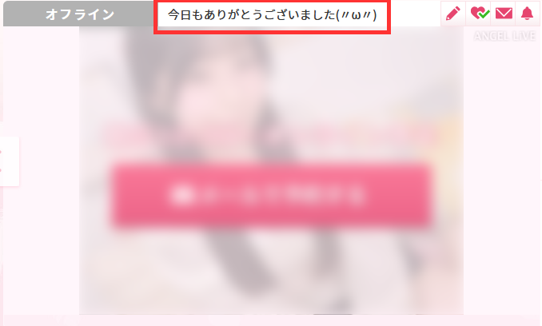
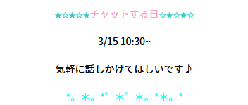
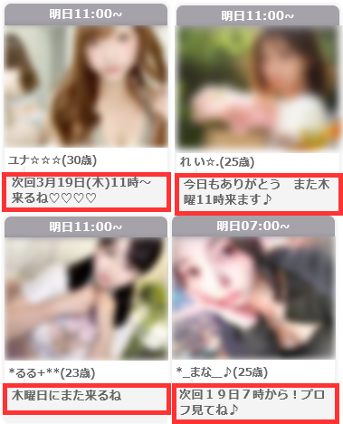
定期的に行うこと
週１～２回くらい
- ギャラリーを追加しましょう♪
- ツイートしてみましょう♪
- 太客さんとメッセージのやり取りをしましょう♪
- プロフを見直してみましょう♪
月１回くらい
- サムネを変更してみましょう♪